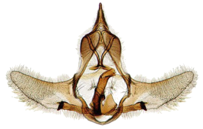

Tema 13. Órganos genitales externos

• Interpretación de genitalia masculina
• Tisanuros, Efemerópteros
• Dermápteros, Grilloblatodeos
• Coleópteros, Lepidópteros
• Dípteros, Himenópteros
• Morfología del ovipositor
• Ovipositor de tisanuros y grilloblatodeos
• Ortópteros Ensifera y Caelifera
• Ovipositor de Hemíptera e Hymenoptera
• Oviscapto de Diptera
Capítulo 20. Órganos genitales masculinos externos (texto)
Capítulo 21. Órganos genitales femeninos externos (texto)
Presentación. Órganos genitales externos
Lecturas complementarias:
• Genitalia. Revisión bibliográfica por Omar Hernández (2019).